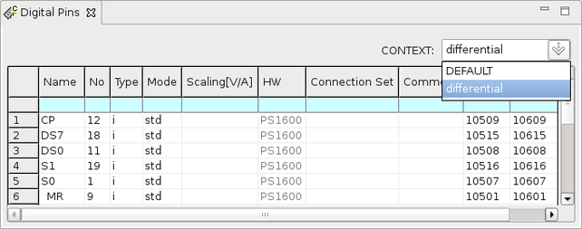

Defining a context
Before you begin
Make sure that the setup perspective is opened.
Procedure
Results
In the Digital Pins editor, you can see in the Context list, there are two options: DEFAULT and differential.

Functional changes
- Introduced before SmarTest 6.3.2
- SmarTest 7.1.3: Changed the parameter Instrument to HW in Digital Pins editor.
- SmarTest 7.1.3: Removed the parameter Ser.R[ohm] from Digital Pins editor.